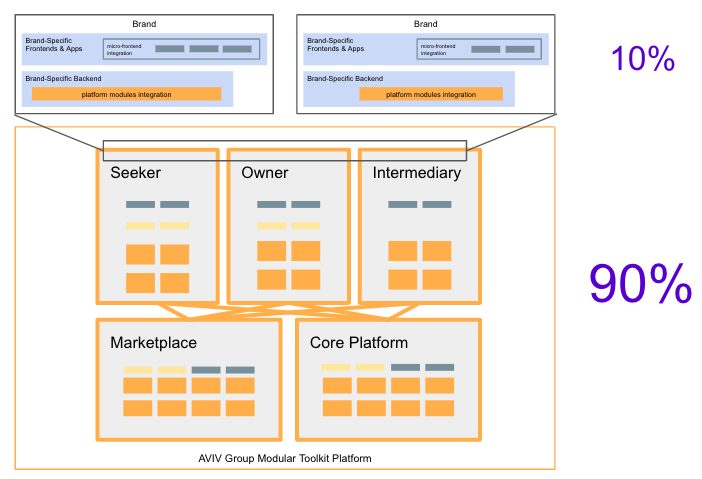

White-label capabilities can be of five different types:
While internal architecture of each capability will be different, the following diagrams show several reference archtectural patterns that you may expect to find in each of white label capabilities:


Brand Group Tech Strategy
|  |
White Label Capabilities are a crucial part of Brand Tech Strategy: creating a multi-brand, multi-actor marketplace platform powered by unified customer experiences built on standard data layers and shared platform services. The capabilities were directly derived from the business strategy and customer journeys. To learn more about Brand Tech Strategy and White Label Capabilities take a look at this presentation from Brent McLean (CTO), Željko Obrenović (Chief Architect) and Andreas Kaim (CIO):
|
Visuals
 |
We are constantly creating communication materials to explain White label Capabilities to diverse audiences better. Here you can find these materials:
|
About the Logo
 |
The logo of this app is derived from the "slicing the elephant" visual frequently used in Brent's presentations on Tech Strategy (e.g., slide 7 here). Slicing the elephant phrase describes methods to make big challenge (creating a pan-European, multi-brand, multi-actor marketplace platform) into a series of smaller challenges (the White Label Capabilities roadmap). |
DISCLAIMER: No elephants were harmed during the definition of White Label Capabilities.
(credit
Laurent Husson)
Data
 |
White Label Capabilities and the roadmap are formally defined in a small database. This site is generated from this data source. You can view the data here:
|